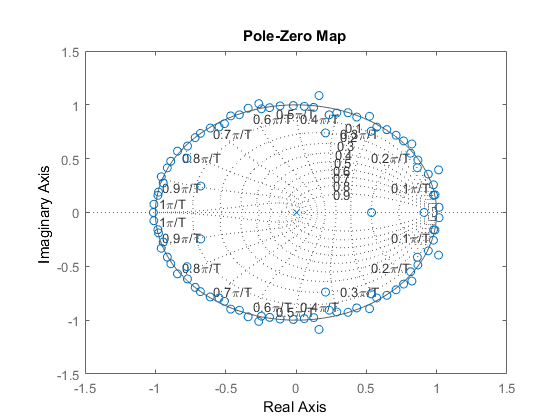
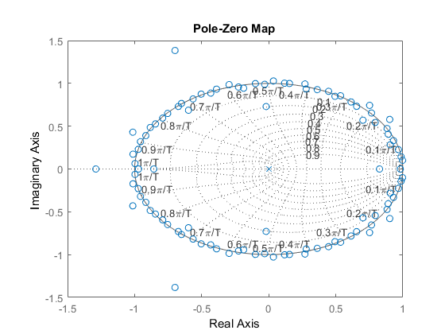
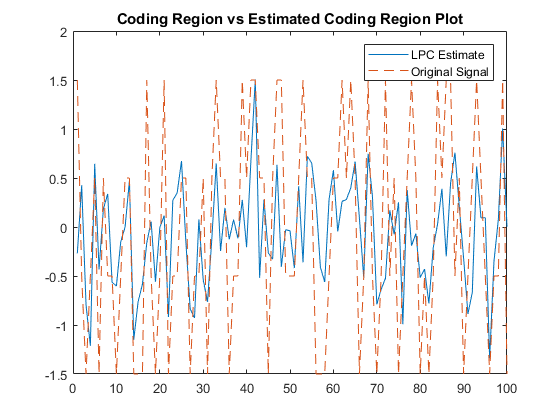
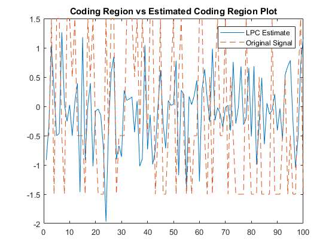

ECES T580 Lab 8
Bhautik (Brian) Amin
Contents
Lab 8.1.1
Load data and extract the fifth non-coding region and coding region
clear all; clc; hbb = genbankread('hbb_region_chr11.gb'); [Coding, Non] = getCRNCR(hbb, 5); Coding = lower(Coding); Non = lower(Non); % Just to make sure everything is lowercase
Map the two sequences to real number representation A: 1.5, C: 0.5, G: -0.5, T: -1.5
Coding = strrep(Coding,'a',',1.5,'); Coding = strrep(Coding,'c',',0.5,'); Coding = strrep(Coding,'g',',-0.5,'); Coding = strrep(Coding,'t',',-1.5,');
Split the comma delimited string into a cell array
Coding = strsplit(Coding,',');
Remove any extra characters (Commas, quotation marks, etc.)
Coding = [Coding(1); cellfun(@str2num,Coding(2:end),'un',0).'];
Remove whitespace
Coding = Coding(~cellfun(@isempty, Coding));
Convert to mat object
Coding = cell2mat(Coding);
Map the two sequences to real number representation A: 1.5, C: 0.5, G: -0.5, T: -1.5
Non = strrep(Non,'a',',1.5,'); Non = strrep(Non,'c',',0.5,'); Non = strrep(Non,'g',',-0.5,'); Non = strrep(Non,'t',',-1.5,');
Split the comma delimited string into a cell array
Non = strsplit(Non,',');
Remove any extra characters (Commas, quotation marks, etc.)
Non = [Non(1); cellfun(@str2num,Non(2:end),'un',0).'];
Remove whitespace
Non = Non(~cellfun(@isempty, Non));
Convert to mat object
Non = cell2mat(Non);
Lab 8.2.1
What is H(z) = X_hat(z)/X(z) H(z) describes the transfer function of the filter. Where the input to the filter is X(z), the supposely noisey data and X_hat(z) is the filterd output
Use the matlab function lpc to estimate the AR coefficients of both coding and noncoding regions (use p=100)
[a_coeff_coding, g_coding] = lpc(Coding, 100); [a_coeff_noncoding, g_noncoding] = lpc(Non, 100);
Discrete Transfer Function model for the filter:
NUM = [0 -a_coeff_coding(2:end)]; DENOM = 1; sys = filt(NUM, DENOM); figure(10) pzmap(sys) grid on NUM = [0 -a_coeff_noncoding(2:end)]; DENOM = 1; sys = filt(NUM, DENOM); figure(11) pzmap(sys) grid on 
Lab 8.3.1
1. Use filter command with the H(z) designed in previous problem. Get predicted x_hat
Filter arguments (Num Coefficients, Denom Coefficients, Signal)
est_coding = filter([0 -a_coeff_coding(2:end)],1,Coding); est_noncoding = filter([0 -a_coeff_coding(2:end)],1,Non);
2. Plot original signal and predicted signal on same plot (Plot subset 201:300)
figure(1) plot(est_coding(201:300)) hold on; plot(Coding(201:300),'--') title('Coding Region vs Estimated Coding Region Plot') legend('LPC Estimate','Original Signal') figure(2) plot(est_noncoding(201:300)) hold on; plot(Non(201:300),'--') title('Coding Region vs Estimated Coding Region Plot') legend('LPC Estimate','Original Signal') 
3. Compute MSE between both non-coding and coding sequences and their
%estimated counterparts. Which one is better?
error_coding = immse(est_coding(201:300), Coding(201:300))
error_noncoding = immse(est_noncoding(201:300), Non(201:300))
error_coding =
0.8032
error_noncoding =
1.8750
We can see from the errors that the coding error between the estimate and the measured is lower than the noncoding region. The estimated coding region is better than the estimated noncoding region. This may be because the noncoding region could have more noise or nonuniformity
4. Can we use this method to help identify non-coding region? We see that the error corresponds to the coding and non-coding regions above.
Yes, AR and a correlation method could be used to identify CDS and NCDS for a given sequence. My workflow would be to convert the given hbb into a integer sequence as done before. Run that through LPC and filter the signal to get an estimate. Afer this, getting the residual error between the two for analysis. Using a function like xcorr in MATLAB we can find the lag between the original signal and the filtered signal. These key points could show the correlation between coding and noncoding parts within the signal.